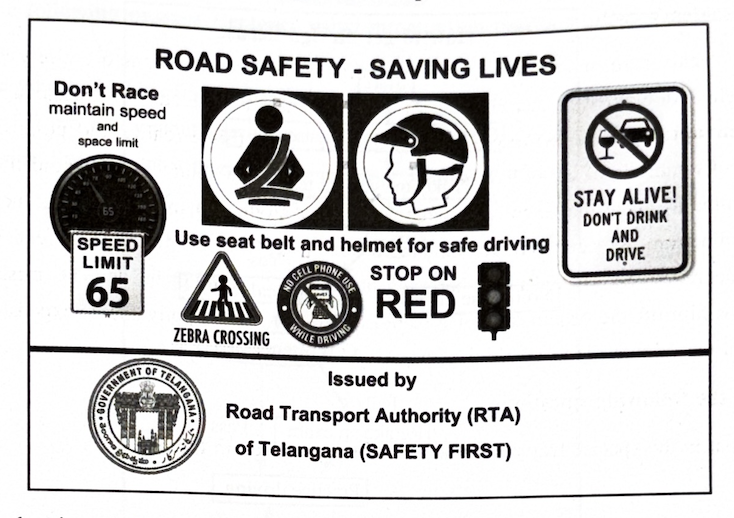
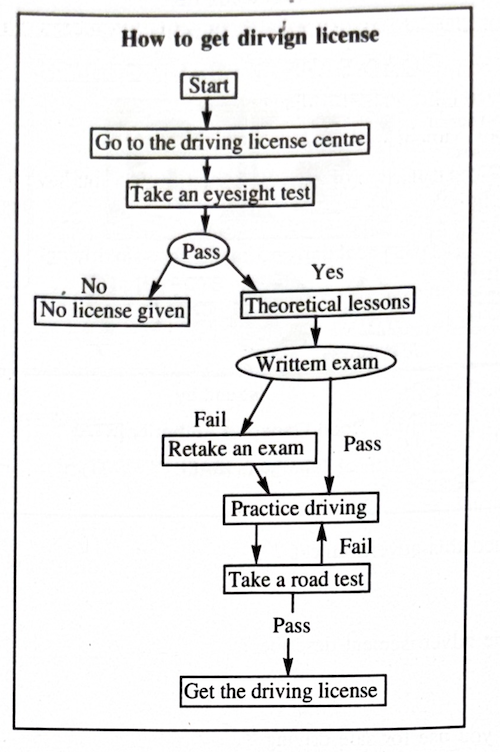
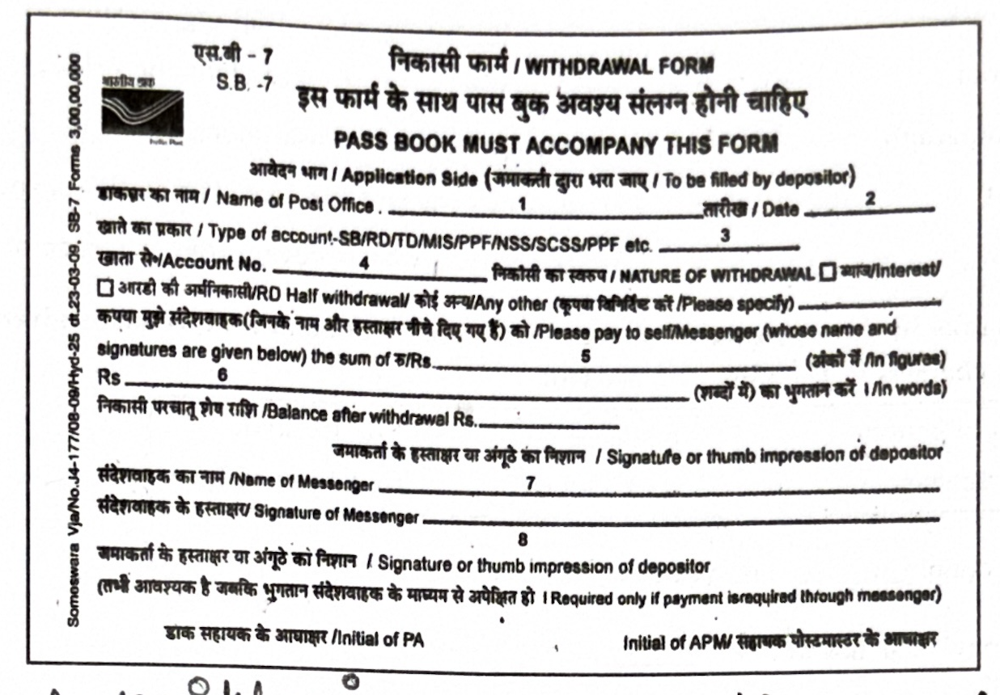
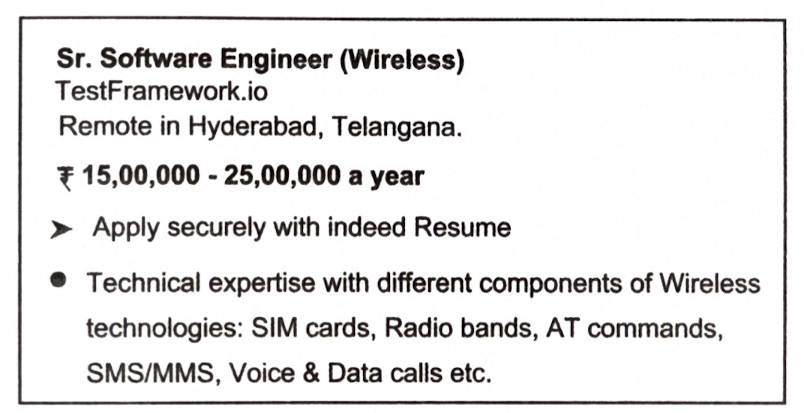

4. Read the following passages and answer ANY FOUR questions given
below:
4 × 1 = 4M
“I’m not the Dean,” he explained. “I am the medical school Secretary. I was Secretary here long before you were born, my boy. Before your father, probably. I remember well enough when the Dean himself came up to be admitted.” He removed his glasses and pointed them at me. “I’ve seen thousands of students pass through the school. Some of them have turned out good, and some of them bad — it’s just like your own children.”
I nodded heartily, as I was anxious to please everyone. “Now, young feller,” he went on more briskly, “I’ve got some questions to ask you.” I folded my hands submissively and braced myself mentally.
“Have you been to a public school?” he asked. “Yes.”
“Do you play Rugby football or Association?” “Rugby.”
“Do you think you can afford to pay the fees?” “Yes.”
He grunted, and without a word withdrew. Left alone, I diverted my apprehensive mind by running my eye carefully over the line of black-and-white pictures of past deans, studying each one in turn. After ten minutes or so the old man returned and led me in to see the living holder of the office.
i) “I am not the Dean,” he explained. Who does the word ‘I’ refer to?
ii) How long was the Secretary there in the college?
iii) Name the games mentioned in the passage.
iv) What was the last question to the speaker?
v) How did the narrator divert his apprehensive mind?
vi) Where did the old man take the narrator?
vii) Pick the word, from the passage, which means have enough money to pay.
viii) Pick the antonym of slowly from the passage.
5. Read the following passage carefully and answer ANY FOUR questions
given after it in a word or in a sentence each.
4 × 1 = 4M
A seventy-acre, man-made forest near Suryapet has exclusively and entirely been dedicated to the wild. An amazingly incredible spirit of an agricultural graduate, Mr. Dussarla Satyanarayana of Raghavapuram, near Motey (Suryapet district) made this a reality and possibility. Birds and animals of hundreds of types have homes in this haven. The nature-lover behind this project took all measures to make this expanse a sanctuary. Every product of this forest goes to feed ants and not a grain from here goes out for human consumption. Even the fallen trees feed white ants or get bio-degraded. Seven tanks dug here and there meet their water needs. The missionary zeal in him keeps him off the beaten track. He thanks his friends who happily share expenses. BBC Telugu telecast a ten-minute video of his mission. May his tribe multiply!
Answer the following questions.
i) What is the special feature of this forest as highlighted in the title?
ii) Who created this amazingly incredible wonder?
iii) Where is that man-made forest?
iv) How do his friends help this nature-lover?
v) Write the synonym, from the passage, of the word unbelievable.
vi) Pick out from the passage the one-word substitute that means an area where wild birds and animals are protected.
vii) Find out the idiom used in the passage to mean far away from other people, houses, etc.
viii) Mark stress on the right syllable of the word missionary.
6. Study the advertisement given below and answer questions given
after it.
4 × 1 = 4M

i) Who has issued this advertisement?
ii) What does the advertisement describe?
iii) What should you use for safe driving?
iv) Name the two things to avoid while driving.
v) What is the symbol given for pedestrians?
vi) Expand RTA.
vii) What is the motto of RTA?
viii) While driving, one needs to maintain the speed limit. Write true or false.
7. Read the flow chart below and answer questions given after it.
4 × 1 = 4M

i) What does the flow chart describe?
ii) How many steps are given in the flow chart?
iii) What test should one pass to go for a written test?
iv) What happens when one doesn’t pass the eyesight test?
v) What should one do after clearing the eyesight test?
vi) What happens when one fails the written exam?
vii) What happens when one clears the written exam?
viii) What can the applicant do after practicing driving?
8. Rewrite the following passage/sentence using punctuation marks
wherever necessary.
8 × ½ = 4M
a) Jim: ma you don’t think I stole that diamond.
b) gandhiji led the non violent movement.
c) are you sure Jim that put it there oh oh… i see (laughs) you have it
9. Match the following words in Column-A with their meanings or
definitions in Column-B.
4 × 1 = 4M
| Column A | Column B |
|---|---|
| i) spend thrift | a) someone who has a lot of experience in a field. |
| ii) tee totaller | b) a loyal supporter of an organization. |
| iii) veteran | c) one who never takes alcoholic drinks. |
| iv) seismograph | d) a person who wastes money. |
| v) theist | e) an instrument for detecting earthquakes. |
| vi) stalwart | f) a person who believes in the existence of God. |
10. Fill in the blanks in the following sentences with suitable
idiomatic expressions given below. Make necessary changes in the
idioms if needed.
4 × 1 = 4M
| from top to bottom | a square meal | tie the knot |
| a white elephant | dark horse | a labour of love |
i) The couple ________ last year.
ii) His new car has become ________.
iii) I would clean my room ________ every Sunday.
iv) The soldiers are very tired. They haven’t had ________ for four days.
v) The Gujarat Titans has proved to be ________ in the recent IPL.
vi) Preparing a book is clearly ________.
11. Make four meaningful sentences based on the verb patterns given
below. An example is given as a model.
4 × 1 = 4M
| Subject | Transitive Verb | Object | Object Compliment |
|---|---|---|---|
| We | made | Veena | our leader. |
1) ____________________________
2) ____________________________
3) ____________________________
4) ____________________________
12. Fill in the blanks of the given blank form based on the
information furnished below.
8 × ½ = 4M
You are S. Swetha. Your Post Office Savings Bank Account Number is 56847 at Post Office of Godavarikhani, Peddapalli district. Withdraw an amount of Rs. 1200/- today by filling in the withdrawal form.

1) ____________________________
2) ____________________________
3) ____________________________
4) ____________________________
5) ____________________________
6) ____________________________
7) ____________________________
8) ____________________________
9) ____________________________
10) ____________________________
13. Prepare a Curriculum Vitae / Resume / Bio-data in response to the
following advertisement.
1 × 4 = 4M

14. Write a letter applying for the post of Assistant Teacher in a
School.
1 × 4 = 4M
(OR)
We all witnessed COVID-19 deaths recently. You have witnessed the death of your neighbor due to COVID-19. Write a letter to your friend in the U.S.A describing the incident and how you felt about it.
15. Read the following passages and make notes. Add a suitable title.
1 × 4 = 4M
It is not enough to prepare well for examinations. Success in the exams depends also on your mental state of mind during the exam, proper time management, neat presentation of answers and other small details. Sleep well on the night before the exam and resist the temptation of last-minute cramming. You should be well rested and relaxed.
On the morning of the exam, have a light breakfast and set out. Reach the examination hall well in time, particularly on the first day. Once you get the question paper, read it carefully. Remain calm—any silly mistake you may make in understanding the questions can have damaging consequences. Spend at least five minutes going through the different sections of the paper. It is advisable to start with those questions you are confident with, instead of wasting time with the difficult ones. Do not panic if you get stuck with a question. Leave it incomplete and move on to the next level of difficulty. Save the toughest questions for the end. All the ‘bits’ pertaining to a question should be answered in a sequence and at one place. Keep numbering the papers as you proceed. Draw all diagrams neatly and colour them, if possible, to make them more attractive. After you complete the paper, tie up the sheets properly. You should then revise the answer paper at least twice before handing it in.
16. Mark the stress for ANY EIGHT of the following words.
8 × ½ = 4M
i) responsibility ii) footprint
iii) potholes iv)
grandmother v) again
vi) generation vii) dispute
viii) before ix)
indebted x) congratulate
17. Write a dialogue between teacher and student regarding the
student’s absence the previous day.
1 × 4 = 4M
(OR)
Write a dialogue between two friends regarding the importance of planting trees.